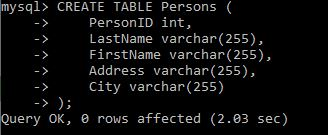
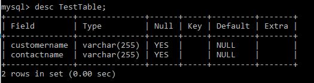

The following example creates a table called "Persons" that contains five columns: PersonID, LastName, FirstName, Address, and City:
The PersonID column is of type int and will hold an integer.
The LastName, FirstName, Address, and City columns are of type varchar and will hold characters, and the maximum length for these fields is 255 characters.
The empty "Persons" table will now look like this:
Tip: The empty "Persons" table can now be filled with data with the SQL INSERT INTO statement.
The following SQL creates a new table called "TestTable2" (which is a copy of the "Persons" table):
The empty "TestTable2" table will now look like this:
